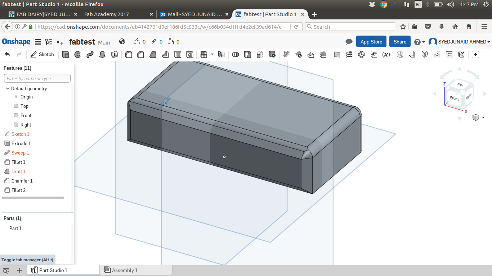

2D Designing
Raster Vs Vector
There are two main type of image files: Raster and Vector. Raster images are more common in general such as jpg, gif, png, and are widely used on the web. Vector graphics are common for images that will be applied to a physical product. Also used in CAD, engineering, and 3D graphics which we do not provide information nor services for. When using a raster program you paint an image and it's similar to dipping a brush in paint and painting. You can blend colors to soften the transition from one color to another. When using a vector program you draw the outline of shapes: e.g. an eye shape, a nose shape, a lip shape. These shapes display one single color each.
That means, when you try and scale the image into a larger size, the quality drops and the edges of lines become fuzzy (staircase effect). This is the major limitation of using raster images. A vector image is composed of paths, which are represented by mathematical functions. These mathematical function represents the actual borders and the different elements in the image. Hence the maximum resolution of the image is not limited by the number of pixels. These mathematical functions can scale easily giving lossless ability to zoom to any extent on the image. You can erase pixels in a raster image using the eraser tool but, that is not possible in a vector image. In a vector image you can only trim the path according to some constrains.
There are so many softwares which develops the Raster and Vector images
2D-Softwares
Raster VectorGIMP (GNU Image Manipulation Program)
GIMP stands for GNU Image Manipulation Program (formerly General Image Manipulation Program), a free graphics editing package. It is typically used to do things like:
Installing Gimp
For installing the gimp we have to open the terminal window and we can install ctrl+Alt+t and we have to follow the steps
$ sudo add-apt-repository ppa:otto-kesselgulasch/gimp
$ sudo apt-get update # update the repository
$ sudo apt-get install gimp # Install gimp
Once the installation of the GIMP is done i have used some pictures downloaded from the google images i have edited have a look in the gif
Animated GIF
First image Download File(.xcf)
Second image Download File(.xcf)
updated !
I have used the GIMP and i feel the best software for the photo editing in the senario of the open source softwares for image editing , i had a great time understanding the usabality of the GIMP Software for multiple purposes like image editing and making the inverted colour images for the pcb designing.so i have choosed the GIMP for creating 2D raster images
Photoshop
Adobe Photoshop is a raster graphics editor developed and published by Adobe Systems for macOS and Windows.
Photoshop was created in 1988 by Thomas and John Knoll. Since then, it has become the de facto industry standard in raster graphics editing, such that the word "photoshop" has become a verb as in "to Photoshop an image," "photoshopping" and "photoshop contest", though Adobe discourages such use.[7] It can edit and compose raster images in multiple layers and supports masks, alpha compositing and several color models including RGB, CMYK, Lab color space, spot color and duotone. Photoshop has vast support for graphic file formats but also uses its own PSD and PSB file formats which support all the aforementioned features. In addition to raster graphics, it has limited abilities to edit or render text, vector graphics (especially through clipping path), 3D graphics and video. Photoshop's featureset can be expanded by Photoshop plug-ins, programs developed and distributed independently of Photoshop that can run inside it and offer new or enhanced features.
and it is so powerful software where it can easily build high reolution Raster images.Read More ...
here is my work of making tempelate certificate
Snapshot of Photoshop
Certificate template
Download File(.psd)
updated !
I had used the photoshop before academy ,it is a very aligent software to create the flyers and certificates so i have tried to make a template certificate
My Paint
MyPaint began in 2004 when Martin Renold bought himself a Wacom graphics tablet. He noticed that the program he was using would sometimes drop a stroke when scribbling too fast. He thought he could be more expressive if his brush reacted in a different way to pressure and speed. mypaint-ss-1 Martin wrote a few prototypes, and applied what he’d learned in his engineering studies. His simple program grew into a brush editor with a simple digital canvas. In 2006 Martin released version 0.4, and thought it was complete. MyPaint now did everything he wanted it to do, but artists found it and began to use it. Some of them asked for features that Martin also wanted, so development continued. Since then, many more have contributed to the code, or spread the word about MyPaint on the Internet. Fast-forward to today. MyPaint is a nimble, distraction-free, and easy tool for digital painters. It supports graphics tablets made by Wacom, and many similar devices. Its brush engine is versatile and configurable, and it provides useful, productive tools.Read More ...
Mirror butterfuly Download File(.ora)
updated !
I have used the mypaint for the first time i was very amazed to see the lots of brush sets available and i have tried all brush tools and i have made the drawing and i have tried to understand what differences are present in mypaint and mspaint
Inkscape
Inkscape is the only open vector developing software scalable vector graphics(SVG),The name is made up of the two English words "ink" and "scape". Ink is a common substance for drawings, and is used when the sketched work is ready to be permanently committed to paper, and thus evokes the idea that Inkscape is ready for production work. A scape is a view of a large number of objects, such as a landscape or ocean-scape, and thus alludes to the object-oriented nature of vector imagery.
Read More ...
Inskscape design
Download File(.svg)
Laser Cutter
updated !
I have used the inkscape for the first time i was very amazed to see the lots of features to create the vector images and i have got to understand how the inkscape far better than the corel Draw Software and i was able to understand it clearly
3D Designing
3D computer graphics, 3D modeling (or three-dimensional modeling) is the process of developing a mathematical representation of any three-dimensional surface of an object (either inanimate or living) via specialized software. The product is called a 3D model. It can be displayed as a two-dimensional image through a process called 3D rendering or used in a computer simulation of physical phenomena. The model can also be physically created using 3D printing devices.
3D-Softwares
Free CAD
FreeCAD is a free and open-source (under the LGPLv2+ license) general-purpose parametric 3D CAD modeler and a BIM software with FEM support. FreeCAD is aimed directly at mechanical engineering, BIM and product design but also fits in a wider range of uses around engineering, such as architecture or other engineering specialities. Read More ...
Installing FreeCAD
$ sudo add-apt-repository -y ppa:freecad-maintainers/freecad-stable
now update and install the FreeCAD
$ sudo apt-get update # Update the repository
sudo apt-get install freecad # Installing FreeCAD
FreeCAD is aimed directly at mechanical engineering and product design but also fits in a wider range of uses around engineering, such as architecture or other engineering specialties. I have gone through the tutorials shared by our Proffessor Neil Gershenfeld and tried to make basic designs ,tools ,shapes etc in FreeCAD ,i have used the FreeCAD to understand the basic designing and i have used the sketcher and designed the a nominal 3D models and used to understand the designing tool will be do update this in future
Link-1 Link-2 shared by Prof. Neil GershenfeldFree CAD file
updated !
I have used the freeCAD for the first time,it looks a promising software similar to the AutoCAD but the free CAD is the Opensouce software.which can run on both linux and windows environment and easy to use software.
Onshape
Onshape is the first and only full-cloud 3D CAD system that lets everyone on a design team work together using any web browser, phone, or tablet.Onshape was built from scratch for the way today’s engineers, designers and manufacturers really work, giving them secure and simultaneous access to a single master version of their CAD data without the hassles of software licenses or copying files.
Read More ...

view the original file here
updated !
I have used the onshape for the first time i was very amazed to see the lots of features similar to the solidworks and its very light weight and it cn be used from any browser.its completely based on cloud so there is no need of downloading the client software.i tried create a box using the software.i got good hands on it
Tinker CAD
Tinkercad is a simple, online 3D design and 3d printing tool for the masses. Whether you're a designer, hobbyist, teacher, or kid, you can use Tinkercad to make toys, prototypes, home decor, Minecraft models, jewelry – the list is truly endless!
Read More ...
updated !
I have used the tinkerCAD for the first time i was very easy stuff to just change and play with the shapes and i had great time using the small shapes to create the glass which is the part of future design which made for my project.
Antimony
Antimony is a computer-aided design (CAD) tool from a parallel universe in which CAD software evolved from Lisp machines rather than drafting tables Read More ...
i had problem with installing of the antimony and i have wasted most of time in the installion i have atleast tried 6times installing it has a specific error here this is the gif of the installation and errors on the ubuntu 16.04
but one week after our fablab kochi instructor sibu came to our trivandrum lab ,he told it will work on Manjaro Linux Destor ,so i started the installation on the manjaro i was sucessfully installed on it and started the parametric design assignment

Final project case 3D modeling
Finally i have decided to use the Rhinoceros for the future use of the designng for all my projects .Rhinoceros is best software for the designers to build their designs and i had a great experience while using the Rhinoceros.i will be explaining step by step how i designed the final project case 3D Modeling.
Step: 1 I have opend the Rhinoceros modeling software and i took a rectangle shape tool just typing rectagle and i have drawn the rectangle.
Step: 2 Now i selected the extrudeCrv tool and slected the rectangle made and put a 5mm height to make a base.
Step: 3 Draw another rectangle inside with the gab between the first rectangle and second is around 5mm.
Step: 4 Now select the curves we wanted to extrude and press extrude curve.which will create open box with walls.
Step: 5I have created another base using the process used in the step 1 and i have created circle and extruded the curve and i have done the boolean substraction command and i have substracted the cylinder from the base
Step: 6 i have drawn a rectangle on the wall of the box and i have extruded the curve and i have made the boolean substraction to make a hole in the wall
Step: 7 Adding up extruded letters using the text tool and creating the extruded font on the box top case
Step: 8 Finally aliging the top cover of the box to see how it looks

{kind=link}